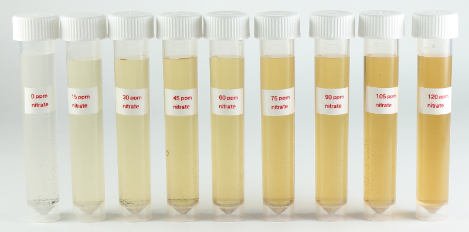

Hach NitraVer 5 Reagent¶

Reagents & Equipment¶
- Colorimeter with 400 nm LED (part # COLOR-400)
- Cuvettes (macro or semi-macro)
- NitraVer 5 Nitrate Reagent for 10 mL samples, Hach cat # 21061-69
- Stir plate and stir bar for mixing
- 1 mL pipette
- Small beaker
- (Optional) Distilled water for sample dilutions
Colorimeter set-up¶
- Wavelength: 400 nm
- Nitrate standard data: Mid-range works well (0 - 80 ppm NO3). Download a data file or prepare your own nitrate standard data
- Before measuring blank the colorimeter against water or a distilled water sample developed with NitraVer 5 reagent as described below
Method¶
- Transfer 10 mL of water sample to a small beaker with a stir bar and place on stir plate.
- Add the contents of a packet of NitraVer5 to the beaker and start mixing.
- After 1 minute, take the beaker off the stir plate. Remove the stir bar.
- Wait at least 5 mins for the color to develop.
- Pour some of the sample into a cuvette, place in the colorimeter and click measure. The program will return the nitrate concentration in ppm.